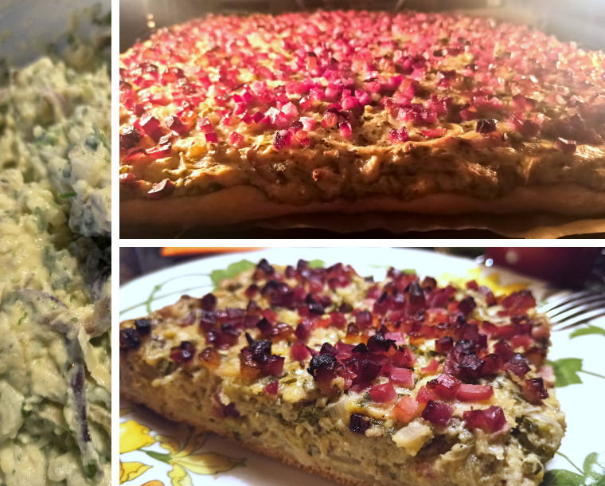

Salzekuchen
Quelle und weitere Informationen: https://github.com/OMerkel/recipes
Zum Rezepte-Index 🍲

Zutaten
Für den Teig
-
100 ml Wasser
-
100 ml Milch
-
1/2 Würfel frische Hefe
-
1/2 TL Salz
-
125 g Weizenmehl Type 1050
-
125 g Weizenmehl Type 405
-
4 EL Öl
Für den Belag
-
4 mittelgroße Zwiebeln
-
2 EL Öl
-
1 EL Butter/Margarine
-
1 Bund Petersilie
-
250 g durchwachsener Räucherspeck
-
500 g gekochte Kartoffeln vom Vortag
-
1 großes Ei
-
250 g Magerquark
-
200 g Schmand oder Crème fraîche
-
1 TL Kümmel
Zubereitung
-
100 ml Wasser und 100 ml Milch leicht erwärmen. Hefe darin auflösen.
-
1/2 TL Salz und beide Mehlsorten mit 4 EL Öl und Hefemilch zusammen kneten.
-
An warmen Ort ca. 30 Minuten abgedeckt aufgehen lassen.
-
Zwiebeln schälen und wahlweise in dünne Ringe, Streifen oder kleine Würfel schneiden und glasig andünsten.
-
Petersilie säubern und hacken.
-
Kartoffeln fein reiben und mit Ei, Quark, Crème fraîche, Zwiebeln und Petersilie vermengen.
-
Mit etwas Milch zu einer glatten Masse verarbeiten und mit Salz, Pfeffer und Kümmel würzen.
-
Speck würfeln.
-
Teig durchkneten und auf gefettetem Backblech ausrollen.
-
Kartoffelmasse gefolgt vom Speck auf dem ausgerollten Teig verteilen.
-
Im vorgeheizten Ofen ca. 40 Minuten bei E-Herd 200 °C / Umluft 175 °C backen.